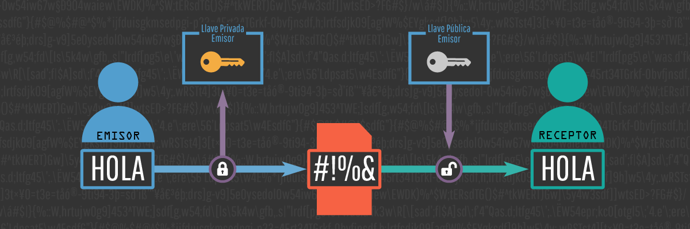

¿Qué es la criptografía?
La criptografía es el desarrollo de un conjunto de técnicas que permiten alterar y modificar mensajes o archivos con el objetivo de que no puedan ser leídos por todos aquellos usuarios que no estén autorizados a hacerlo. Hoy en día, en pleno auge de las comunicaciones digitales, funciona como la base para cualquier proceso de seguridad informática. Esta disciplina nació en la Antigua Grecia con el objetivo de evitar que se difundan secretos militares. Los mensajes se encriptaban con métodos sencillos como, por ejemplo, alternando las letras del abecedario. Con el correr de los siglos esas técnicas se fueron complejizando considerablemente y actualmente atraviesan gran parte de nuestra vida cotidiana: garantizan la seguridad de nuestras transacciones mediante banca online por ejemplo. También van ganado protagonismo en la comunicación entre usuarios: aplicaciones de mensajería como Signal o Telegram desde hace años nos permiten enviar mensajes encriptados de “punta a punta”, desde el origen hasta el destino. Así, ni siquiera accediendo a sus servidores se podría leer el contenido de los chats. WhatsApp se integró a la tendencia en 2016 y Skype recién a principios de 2018, confirmando un rumbo claro hacia paltaformas de comunicación más seguras. Pero ¿cómo funcionan hoy en día estos métodos de encriptación? Cuando convertimos un mensaje que puede ser leído a uno que es ilegible, es decir que a un mensaje lo transformamos en caracteres que no construyen sentido, estamos realizando lo que denominamos un proceso de cifrado. Y si queremos que, nuevamente, ese mensaje sea legible, hacemos el proceso inverso, al que denominamos descifrado. Por lo general estos mecanismos, que conforman la base de la criptografía, se realizan mediante algoritmos y claves. En la actualidad existen diversos tipos de criptografía:
Criptografía simétrica
Solo utiliza una clave para cifrar y descifrar. Ésta debe ser previamente conocida por todas las partes involucradas. Podemos imaginar este sistema como algo similar a la seguridad de nuestra casa. Tenemos una llave para cerrar la puerta y estamos tranquilos que solo las personas con esa misma llave la van a poder abrir. Tenemos la ventaja que podemos compartirla con cualquier persona de confianza, pero también existe la posibilidad de que se extravíe, o de que alguien la robe. Esa es la principal desventaja de la criptografía simétrica.

Criptografía asimétrica o criptografía de clave pública Esta metodología tiene como base la utilización de dos claves diferentes, pero vinculadas matemáticamente entre sí, utilizadas para cifrar y descifrar el mensaje. Una de ellas debe ser pública, propia de cada participante pero puesta a disposición de cualquier usuario, sea participante en el intercambio de información o no. La otra es una clave privada, también propia de cada uno de ellos, pero que debe permanecer en secreto y nunca ser revelada. Al requerir que cada usuario posea un par de claves, y que una de ellas no se comunique nunca a nadie, todo el proceso se vuelve más seguro. Una característica importante de este sistema es que nos permite garantizar la privacidad de un mensaje. El emisor puede cifrarlo con la clave pública del destinatario (que, como vimos, tiene a su disposición) y con esto se asegura que solo ese destinatario podrá descifrarlo con su clave privada.
Julio César
La criptografía clásica abarca casos documentados desde hace más de 4500 años, sin embargo, uno de los más conocidos y más acercados a la criptografía, trata del cifrado de César, que básicamente es un tipo de criptografía utilizada inicialmente por Julio César y luego empleada en distintas situaciones de la historia para la protección de mensajes. Se desconoce a ciencia cierta si Julio César fue quien creó esta criptografía, lo que sí se sabe a ciencia cierta, es que fue el primero en utilizarlo. Antes que nada, se debe saber que Julio César fue un político y militar romano, que destacó por sus increíbles estrategias militares y por haber llevado a Roma a una de sus épocas doradas. Básicamente, se puede decir que Julio César es uno de personajes más emblemáticos de toda la historia romana. Su nacimiento ocurrió en el año 100 a. C., y su fallecimiento ocurrió en el año 44 a. C. Aunque Julio César tuvo grandes hazañas, una de las más interesantes se encuentra en el ámbito de la criptografía, así como se explicó anteriormente; la criptografía denominada cifrado César, la cual era bastante simple. La misma trataba de correr espacios del abecedario para ocultar los mensajes escritos en papel; es decir, si se corrían 3 espacios, la A, pasaría a ser la C, por ende, al querer colocar la A en alguna palabra, se debería colocar la C. Con este simple, pero ingenioso mecanismo, Julio César logró ocultar sus mensajes más importantes, y años después de su muerte, este mismo mecanismo fue utilizado por muchos otros guerreros del imperio romano.
Historia del algoritmo de cifrado RSA
El algoritmo fue descrito en 1977 por Ron Rivest, Adi Shamir y Leonard Adleman, del Instituto Tecnológico de Massachusetts (MIT); las letras RSA son las iniciales de sus apellidos. Clifford Cocks, un matemático británico que trabajaba para la agencia de inteligencia británica GCHQ, había descrito un sistema equivalente en un documento interno en 1973. Debido al elevado coste de las computadoras necesarias para implementarlo en la época su idea no trascendió. Su descubrimiento, sin embargo, no fue revelado hasta 1997 ya que era confidencial, por lo que Rivest, Shamir y Adleman desarrollaron RSA de forma independiente. El algoritmo fue patentado por el MIT en 1983 en Estados Unidos con el número 4.405.829. Esta patente expiró el 21 de septiembre de 2000. Como el algoritmo fue publicado antes de patentar la aplicación, esto impidió que se pudiera patentar en otros lugares del mundo. Dado que Cocks trabajó en un organismo gubernamental, una patente en Estados Unidos tampoco hubiera sido posible. Es un algoritmo puramente asimétrico, junto con DSA. Este algoritmo como su nombre lo indica, sirve para firmar (autenticar) y para cifrar información. Una desventaja del algoritmo DSA es que requiere mucho más tiempo de cómputo que RSA.